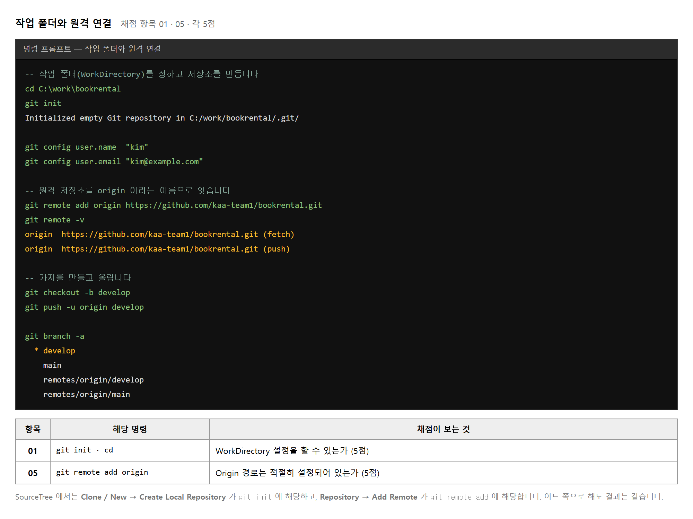
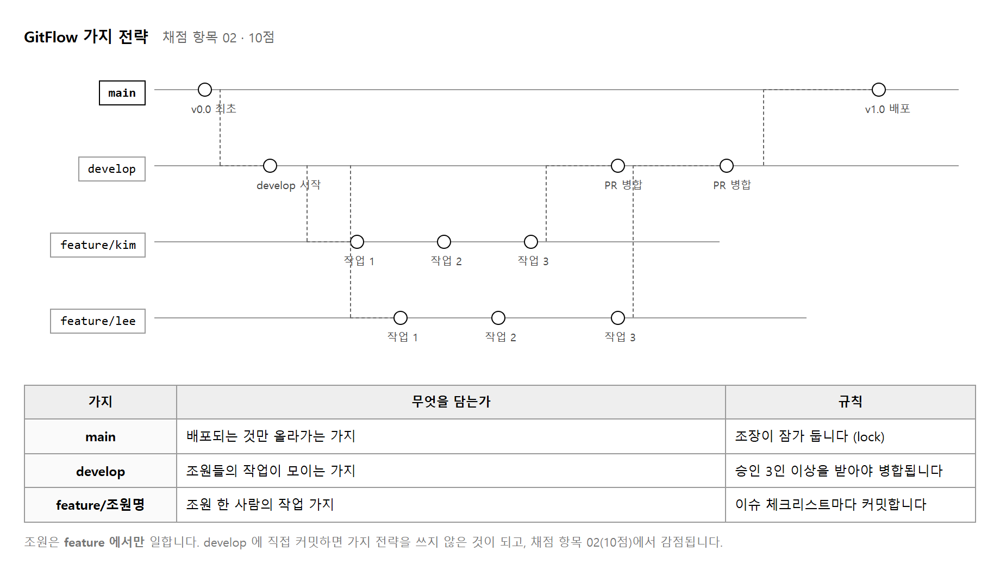
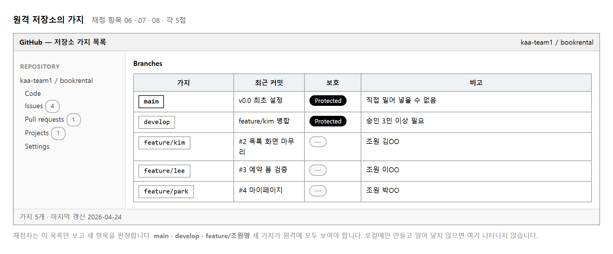
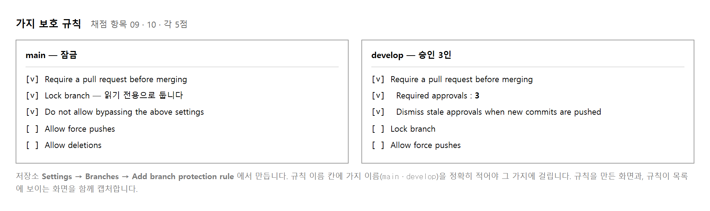
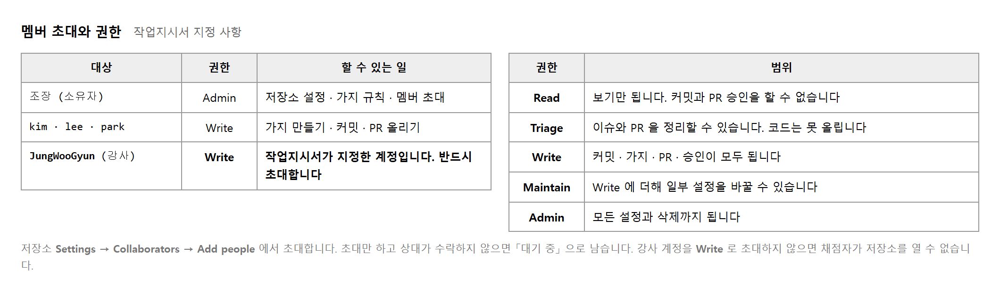
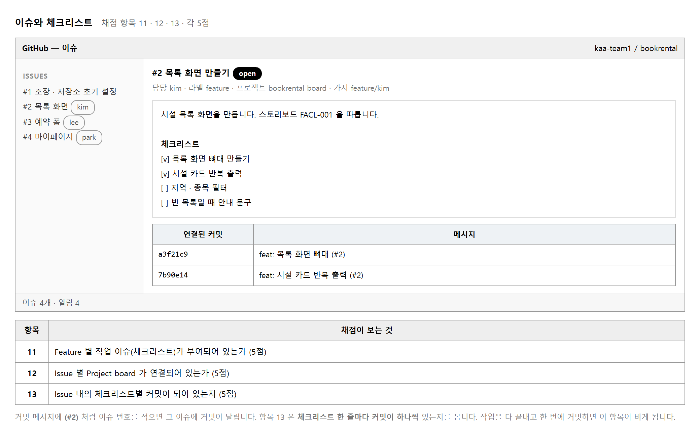
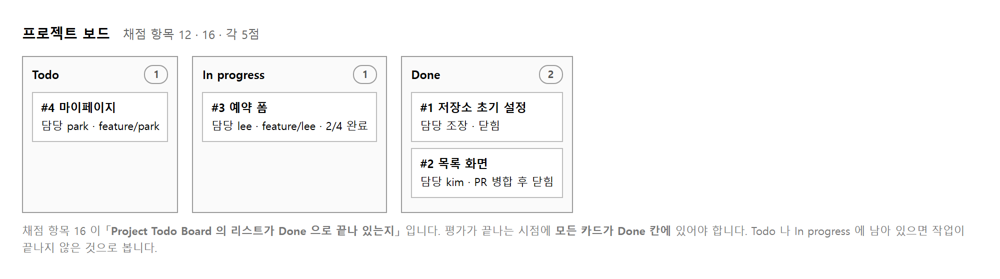
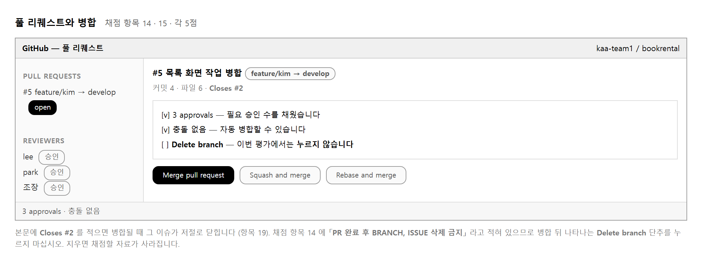
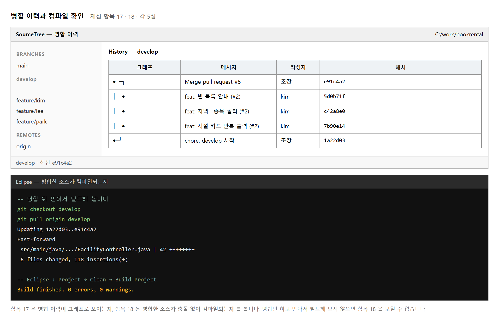
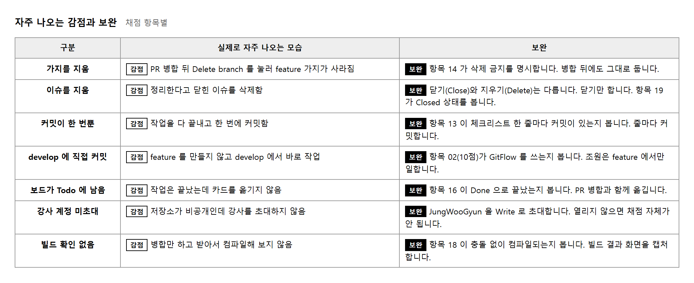

능력단위 개발 환경 운영 지원 (2001020234_23v2) / 2수준 · 평가방법 평가자 체크리스트 (100점)
| 작업지시서 | 캡처 규칙과 제출 형식이 여기 적혀 있습니다 |
| 강사 계정 이름 | 저장소에 Write 권한으로 초대해야 합니다 |
| GitHub 계정 | 본인 것. 조별 저장소를 만듭니다 |
제출물은 둘입니다. 모든 작업 단계를 캡처하고 설명을 단 PDF 와 실제로 작업한 저장소 주소 입니다. 채점자는 PDF 로 과정을 보고, 저장소에 직접 들어가 결과를 확인합니다.
| 묶음 | 능력단위요소 | 확인하는 것 | 배점 |
|---|---|---|---|
| ① | 소스코드 관리하기 | 작업 폴더 · GitFlow · develop 커밋 · feature 커밋 · origin 경로 | 30 |
| ② | 개발 환경 백업하기 | 원격의 세 가지 · 가지 규칙 둘 · 이슈 · 보드 · 커밋 · PR | 50 |
| ③ | 개발 환경 복원하기 | 보드가 Done · 병합 이력 · 컴파일 · 이슈 Closed | 20 |
평가방법이 평가자 체크리스트 이므로 부분 점수가 없습니다. 항목 19개를 하나씩 있다 · 없다로 봅니다.
요소 이름만 보면 파일을 압축해 두었다가 되돌리는 일처럼 읽힙니다. 이 교과의 평가도구는 그것을 형상관리 도구로 하는 일로 옮겨 놓았습니다.
| 능력단위요소 | 이 평가에서의 뜻 | 구체적으로 |
|---|---|---|
| 소스코드 관리하기 | 로컬에서 가지를 나누어 작업하기 | 작업 폴더 · GitFlow · 커밋 · 원격 연결 |
| 개발 환경 백업하기 | 원격 저장소에 올려 두기 | 세 가지를 push · 가지 규칙 · 이슈 · 보드 · PR |
| 개발 환경 복원하기 | 남의 작업을 가져와 되돌려 놓기 | 병합 · 받아서 컴파일 · 이슈 닫기 · 보드 정리 |
이렇게 읽으면 혼자 하는 일이 하나도 없습니다. 조장이 판을 만들고, 조원이 각자 가지에서 일하고, 다시 한곳으로 모읍니다. 그 과정이 원격 저장소에 기록으로 남는 것이 이 교과의 산출물입니다.
main · develop · feature/×3 으로 다섯 개가 됩니다.
이슈도 조원 수만큼 필요합니다.
네 단계로 나누었습니다. 레벨 1과 2의 대부분은 조장이 하고, 조원은 레벨 2의 뒤쪽(이슈 받아 작업)부터 들어옵니다.
조장이 판을 다 깔기 전에 조원이 먼저 커밋하면 가지가 엉킵니다. 조장이 「준비 끝」 이라고 말한 뒤 조원이 저장소를 내려받는 순서로 진행하십시오.
| No | 제출물 | 내용 |
|---|---|---|
| 1 | 조장 셋업 과정 PDF | 저장소 생성 · 가지 · 규칙 · 멤버 초대 · 이슈 · 보드 화면과 설명 |
| 2 | 조원 작업 과정 PDF | 가지 전환 · 체크리스트별 커밋 · PR · 병합 화면과 설명 |
| 3 | 저장소 주소 | 강사 계정에 Write 권한을 준 상태로 제출 |
작업지시서가 「모든 작업 단계별 이미지 캡처 및 설명 후 PDF 로 제출」 이라고 되어 있습니다. 캡처만 늘어놓지 말고 무엇을 한 화면인지 한 줄씩 답니다.
| 확인 장소 | 항목 | 비고 |
|---|---|---|
| 로컬 · SourceTree | 01 · 05 · 17 | PDF 캡처로만 볼 수 있습니다 |
| 원격 저장소 | 02 · 03 · 04 · 06 ~ 16 · 19 | 채점자가 직접 들어가 봅니다 |
| Eclipse | 18 | 빌드 결과 캡처가 필요합니다 |
대부분이 원격 저장소에서 직접 확인됩니다. 그래서 강사 계정 초대가 빠지면 열여섯 항목이 한꺼번에 날아갑니다.
목적 — 19개 항목 가운데 열여섯 개가 원격 저장소에서 직접 확인됩니다. 강사 계정이 초대되어 있지 않으면 그 열여섯이 한꺼번에 날아갑니다. 제일 먼저 확인하고, 마지막에 다시 확인합니다.
| 확인 장소 | 항목 | 없으면 |
|---|---|---|
| 로컬 · SourceTree | 01 · 05 · 17 | PDF 캡처로만 볼 수 있습니다 — 안 찍으면 끝 |
| 원격 저장소 | 02 · 03 · 04 · 06 ~ 16 · 19 | 채점자가 직접 들어가 봅니다 — 초대가 없으면 전부 0점 |
| Eclipse | 18 | 빌드 결과 캡처가 필요합니다 |
| 누가 | 무엇을 | |
|---|---|---|
| 조장 | 저장소 생성 · 가지 · 보호 규칙 · 멤버 초대 · 이슈 · 보드 | 「조장 셋업 과정」 |
| 조원 | 가지 전환 · 체크리스트별 커밋 · PR · 병합 | 「조원 작업 과정」 |
작업지시서가 「모든 작업 단계별 이미지 캡처 및 설명 후 PDF 로 제출」입니다. 설명이 조건에 들어 있습니다.
| 이렇게 붙이면 약합니다 | 이렇게 붙입니다 |
|---|---|
| 화면만 죽 늘어놓음 | 캡처 아래 한 줄 — 「무엇을 한 화면이고 무엇이 확인되는가」 |
| 「가지 생성」 | 「git branch -a — main · develop · feature/kim 세 가지가
원격까지 올라간 것을 확인」 |
마지막에 허둥대지 않게 지금 만들어 둡니다.
| 확인할 것 | |
|---|---|
| □ | 강사 계정이 멤버 목록에 보이는가 |
| □ | 권한이 Write 인가 (Read 면 안 됩니다) |
| □ | 저장소 주소를 정확히 적었는가 |
| □ | PDF 두 부가 다 있는가 |
제출물 — 역할 분담표, 제출 직전 확인표(빈 칸)
스스로 확인 — ① 조장과 조원이 각각 무엇을 캡처할지 정했습니까 ② 초대를 지금 보낼 준비가 되었습니까
| 도구 | 쓰는 자리 | 준비 |
|---|---|---|
| Git for Windows | 명령으로 다루기 | 설치 뒤 git --version 으로 확인합니다 |
| SourceTree | 가지와 이력을 눈으로 보기 | 채점 항목 17 이 SourceTree 의 병합 이력을 봅니다 |
| Eclipse | 병합한 소스 컴파일 | 채점 항목 18 이 빌드 결과를 봅니다 |
| GitHub 계정 | 원격 저장소 | 조원 각자 계정이 필요합니다 |
GitHub 는 비밀번호로 밀어 넣을 수 없습니다.
처음 git push 할 때 브라우저 창이 떠서 로그인하게 됩니다.
그 창이 뜨지 않으면 개인 접근 토큰(Personal Access Token) 을 만들어
비밀번호 자리에 넣습니다.
C:\> git --version git version 2.44.0.windows.1 C:\> git config --global user.name "kim" C:\> git config --global user.email "kim@example.com" -- 여기서 적은 이름이 커밋 작성자로 남습니다. 조원마다 다르게 적어야 누가 무엇을 했는지 보입니다.
목적 — 네 가지를 갖추고, 커밋 작성자 이름을 자기 것으로 맞춥니다. 이름을 안 맞추면 채점자가 누가 무엇을 했는지 알 수 없습니다.
git --version
git version 2.44.0.windows.1 처럼 나오면 됩니다.
안 나오면 git-scm.com 에서 Git for Windows 를 깝니다.
git config --global user.name "kim"
git config --global user.email "kim@example.com"
git config --global --list
여기 적은 이름이 커밋 작성자로 남습니다.
git config --global user.name 을 다시 칩니다.main 으로 맞춥니다이 한 줄이 뒤의 고생을 막습니다.
git config --global init.defaultBranch main
git init 을 하면 첫 가지가 master 로 생깁니다.
git status 를 쳐 보면 On branch master 라고 나옵니다.
그런데 GitHub 은 새 저장소를 main 으로 만듭니다.
이대로 밀어 넣으면 원격에 main 과 master 가 둘 다 생겨
가지 구조가 어긋납니다 (채점 항목 02 가 10점입니다).
master 로 만들었다면 고칠 수 있습니다 —
git branch -M main 한 줄이면 이름이 바뀝니다.git push 할 때 브라우저가 떠서 로그인합니다.| 도구 | 쓰는 자리 | 채점 |
|---|---|---|
| SourceTree | 가지와 이력을 눈으로 보기 | 항목 17 — 병합 이력 |
| Eclipse | 병합한 소스 컴파일 | 항목 18 — 빌드 결과 |
둘 다 채점 항목이 걸려 있으므로 반드시 깝니다. 명령만으로 끝내면 17 · 18 이 빕니다.
제출물 — git --version 과
git config --global --list 결과 캡처
스스로 확인 —
① user.name 이 자기 이름입니까
② init.defaultBranch 가 main 입니까
③ SourceTree 와 Eclipse 가 둘 다 깔렸습니까

Git 에서 작업 폴더(Working Directory)는 .git 폴더가 들어 있는 폴더입니다.
그 안에서 파일을 고치면 Git 이 변화를 알아챕니다.
폴더를 잘못 잡아 .git 이 상위에 생기면 엉뚱한 파일까지 따라 들어갑니다.
C:\work\bookrental\ ├─ .git\ ← 여기 있어야 합니다 (숨은 폴더) ├─ .gitignore ├─ src\ └─ README.md
원격 저장소 주소에 붙인 별명입니다.
git push origin develop 은
「origin 이라는 원격의 develop 에 올려라」 라는 뜻입니다.
별명을 쓰지 않으면 매번 긴 주소를 쳐야 합니다.
감점 git remote -v 결과가 PDF 에 없음
권함 연결한 직후 git remote -v 를 실행해 캡처합니다.
항목 05 가 이것만 봅니다
목적 — 채점 항목 01(작업 폴더)과 05(origin 경로)가 이 단계에서 판정됩니다. 각 5점입니다.
C:\> mkdir C:\work\bookrental
C:\> cd C:\work\bookrental
C:\work\bookrental> git init
cd 를 빠뜨리고 C:\work 에서 git init 하면
.git 이 상위에 생겨 엉뚱한 파일까지 따라 들어갑니다.
프롬프트에 적힌 경로를 확인하고 치십시오..git 이 «여기» 있는지 봅니다dir /a
.git 이 보이면 이 폴더가 작업 폴더입니다.
/a 를 붙여야 숨은 폴더가 보입니다.
C:\work\bookrental\
├─ .git\ ← 여기 있어야 합니다 (숨은 폴더)
├─ .gitignore
├─ src\
└─ README.md
.gitignore 를 «먼저» 만듭니다커밋을 시작한 뒤에 만들면 이미 들어간 파일은 빠지지 않습니다.
/bin/
/target/
*.class
.settings/
.classpath
.project
확인해 보십시오. .gitignore 가 없으면 빌드 결과물이 그대로 잡힙니다.
git status --short
?? bin/ ← .gitignore 가 없을 때
GitHub 에서 저장소를 만든 뒤 그 주소를 origin 이라는 별명으로 붙입니다.
git remote add origin https://github.com/team1/bookrental.git
| 말 | 뜻 |
|---|---|
origin | 원격 저장소 주소에 붙인 별명 |
git push origin develop |
「origin 이라는 원격의 develop 에 올려라」 |
git remote -v
origin https://github.com/team1/bookrental.git (fetch)
origin https://github.com/team1/bookrental.git (push)
git remote -v 를 실행해 캡처하십시오.
나중에 하려면 잊습니다.주소를 틀리게 넣고 다시 add 하면 이렇게 나옵니다.
error: remote origin already exists.
덧붙이는 것이 아니라 바꾸는 명령을 씁니다.
git remote set-url origin https://github.com/team1/bookrental.git
git remote -v
| 나오는 것 | 볼 곳 |
|---|---|
fatal: not a git repository | git init 을 안 했거나 다른 폴더에 있습니다. cd 로 자리를 확인하십시오 |
error: remote origin already exists | 이미 이어 두었습니다. 바꾸려면 git remote set-url origin <주소> |
git status 에 ?? bin/ 가 보임 | .gitignore 가 없습니다. 빌드 결과가 올라가면 채점자가 받을 때 충돌합니다 |
줄 끝 경고 LF will be replaced by CRLF | 경고일 뿐입니다. 윈도에서 나오는 것이고 커밋은 정상으로 됩니다 |
제출물 — dir /a(.git 보임) ·
git remote -v 결과 캡처
스스로 확인 —
① .git 이 작업 폴더 안에 있습니까 (상위가 아니라)
② .gitignore 를 커밋 전에 만들었습니까
③ git remote -v 결과를 캡처했습니까

main 이 생깁니다.
커밋 메시지를 v0.0 최초 설정 처럼 적습니다.
git checkout -b develop 입니다.
지금 있는 가지에서 갈라져 나오므로, 어느 가지에 서 있는지 확인하고 만듭니다.
git checkout develop 으로 옮긴 뒤
git checkout -b feature/kim 입니다.
main 에서 만들면 develop 의 내용이 빠집니다.
git push -u origin main · develop · feature/kim.
-u 를 한 번 붙여 두면 다음부터는 git push 만으로 됩니다.
git branch -- 앞에 * 가 붙은 것이 지금 가지 git branch -a -- 원격까지 함께 git status -- 맨 윗줄에 On branch … 가 나옵니다
가지를 잘못 잡고 커밋하는 일이 가장 흔한 사고입니다. 커밋하기 전에 한 번 확인하는 습관을 들이십시오.
목적 — main · develop ·
feature/조원명 셋을 만들고 원격까지 올립니다.
채점 항목 02, 10점입니다.
main 을 만듭니다빈 저장소에는 가지가 없습니다. 확인해 보십시오.
git branch
(아무것도 안 나옵니다)
README 하나를 커밋하면 그때 가지가 생깁니다.
echo # bookrental > README.md
git add README.md
git commit -m "v0.0 최초 설정"
git branch
master 가 나오면
실습 2-2 절차 3 을 빠뜨린 것입니다. 지금 고칠 수 있습니다.
git branch -M main
git branch 로 * main 을 확인하십시오.main 에서 develop 을 만듭니다git branch -- 지금 어디인지 먼저 봅니다
git checkout -b develop
git branch
-b 는 「만들면서 옮겨 간다」는 뜻입니다.
지금 서 있는 가지에서 갈라져 나옵니다.
develop 에서 feature 를 만듭니다git checkout develop -- develop 에 서 있는지 확인
git checkout -b feature/kim
git branch
| 결과 | 뜻 |
|---|---|
develop* feature/kim main |
* 가 붙은 것이 지금 가지입니다 |
main 에서 feature 를 만들면 안 됩니다.
develop 에 쌓인 내용이 빠진 채로 갈라집니다.
만들기 전에 git branch 로 어디에 서 있는지 반드시 봅니다.git push -u origin main
git push -u origin develop
git push -u origin feature/kim
-u 를 한 번 붙여 두면 다음부터는 git push 만으로 됩니다.
git branch -a
앞에 remotes/origin/ 이 붙은 줄이 원격에 있는 가지입니다.
세 개가 모두 보여야 합니다.
GitHub 저장소 화면의 가지 목록에서도 확인하고 둘 다 캡처하십시오 — 항목 02 는 원격에서 확인됩니다.
제출물 — git branch -a 결과 + GitHub 가지 목록 화면
스스로 확인 —
① 가지 이름이 main 입니까 (master 가 아니라)
② feature 가 develop 에서 갈라졌습니까
③ git branch -a 에 원격 세 가지가 다 보입니까
④ GitHub 화면에서도 셋이 보입니까
git status -- ① 무엇이 바뀌었는지 봅니다 git add src/FacilityList.java -- ② 담을 것을 고릅니다 git commit -m "feat: 목록 화면 뼈대 (#2)" -- ③ 묶어서 기록합니다 git push
git add . 로 전부 담는 버릇은 편하지만,
빌드 결과물이나 개인 설정 파일까지 따라 들어갑니다.
.gitignore 를 먼저 만들어 두면 그런 파일이 목록에 나타나지 않습니다.
수행준거 1.3 이 「변경사항을 유형별로 분류하여 변경 이력을 관리」 입니다. 메시지 앞에 유형을 붙이면 그 분류가 됩니다.
| 머리말 | 뜻 | 예 |
|---|---|---|
| feat: | 기능을 더함 | feat: 시설 목록 화면 (#2) |
| fix: | 잘못된 것을 고침 | fix: 빈 목록에서 오류 (#2) |
| docs: | 문서만 바뀜 | docs: README 작성 |
| style: | 동작은 그대로, 모양만 | style: 들여쓰기 정리 |
| chore: | 그 밖의 잡일 | chore: develop 시작 |
끝에 (#2) 처럼 이슈 번호를 적으면 그 이슈에 커밋이 달립니다.
채점 항목 13 이 이것을 봅니다.
약함 수정 · ㅇㅇ · update
권함 feat: 지역 · 종목 필터 (#2)
목적 — develop 과 feature 양쪽에 커밋을 남깁니다.
채점 항목 03 · 04, 각 5점입니다.
git status -- ① 무엇이 바뀌었는지 본다
git add src/FacilityList.java -- ② 담을 것을 고른다
git commit -m "feat: 목록 화면 뼈대 (#2)" -- ③ 묶어서 기록한다
git push
| 걸음 | 안 하면 |
|---|---|
① status |
엉뚱한 파일이 따라 들어간 것을 모릅니다 |
② add |
아무것도 담기지 않아 commit 이 빈 채로 막힙니다 |
③ commit |
로컬에만 있고 push 해도 안 올라갑니다 |
git add . 는 편하지만 위험합니다.
빌드 결과물과 개인 설정 파일까지 따라 들어갑니다.
실습 2-3 에서 .gitignore 를 먼저 만들어 두었다면
그런 파일이 git status 에 아예 나타나지 않습니다.
add 전에 status 를 보는 습관을 들이십시오.수행준거 1.3 이 「변경사항을 유형별로 분류하여 변경 이력을 관리」입니다. 머리말이 그 분류가 됩니다.
| 머리말 | 뜻 | 예 |
|---|---|---|
feat: | 기능을 더함 | feat: 시설 목록 화면 (#2) |
fix: | 잘못된 것을 고침 | fix: 빈 목록에서 오류 (#2) |
docs: | 문서만 바뀜 | docs: README 작성 |
style: | 동작은 그대로, 모양만 | style: 들여쓰기 정리 |
chore: | 그 밖의 잡일 | chore: develop 시작 |
| 이렇게 쓰면 약합니다 | 이렇게 씁니다 |
|---|---|
수정 · ㅇㅇ · update |
feat: 지역 · 종목 필터 (#2) |
git commit -m "feat: 시설 목록 화면 (#2)"
(#2) 를 적으면 2번 이슈에 이 커밋이 달립니다.
채점 항목 13 이 이것을 봅니다. 이슈를 먼저 만들어 두고(실습 2-9) 번호를 확인해 적습니다.
항목 03 과 04 가 나뉘어 있습니다. 한쪽만 하면 한쪽이 빕니다.
| 항목 | 어느 가지 | 무엇을 |
|---|---|---|
| 03 | develop |
chore: develop 시작 같은 첫 커밋 |
| 04 | feature/조원명 |
체크리스트 항목마다 하나씩 |
git log --oneline --graph --all
* 031ed08 feat: 목록 화면 뼈대 (#2)
* 2ee6019 chore: develop 시작
* 6b0961a v0.0 최초 설정
누가 했는지도 확인합니다.
git log -1 --format="%an <%ae>"
kim <kim@example.com>
git config 를 고치고 다시 커밋하십시오.warning: LF will be replaced by CRLF 는 오류가 아닙니다.
윈도와 리눅스의 줄바꿈이 달라 Git 이 맞춰 준다는 알림입니다. 그대로 두면 됩니다.제출물 — git log --oneline --graph --all 결과 +
각 가지의 커밋 화면
스스로 확인 —
① develop 과 feature 양쪽에 커밋이 있습니까
② 메시지에 유형 머리말이 붙어 있습니까
③ 끝에 이슈 번호가 있습니까
④ 작성자가 자기 이름입니까

수행준거 2.1 이 「백업 작업 내용을 식별할 수 있다」, 2.2 가 「백업을 수행할 수 있다」 입니다. 이 평가에서 백업은 원격 저장소에 올려 두는 일입니다. 내 PC 가 고장 나도 원격에 있으면 되살릴 수 있기 때문입니다.
| 백업 작업 내용 | 이 평가에서 | 확인 |
|---|---|---|
| 무엇을 백업하는가 | 소스 · 가지 · 이력 | 원격 가지 목록에 세 종류가 보이는가 |
| 언제 백업하는가 | 커밋할 때마다 push | 커밋 시각과 원격 갱신 시각이 비슷한가 |
| 어디에 백업하는가 | GitHub 원격 저장소 | git remote -v 결과 |
git push 를 해야 올라갑니다.
채점 항목 06 · 07 · 08 은 원격 저장소의 가지 목록만 봅니다.
목적 — 채점 항목 06 · 07 · 08(각 5점)은 원격 저장소의 가지 목록만 봅니다. 로컬에 아무리 잘 만들어 두어도 올리지 않으면 없는 것입니다.
git branch -a
remotes/origin/ 로 시작하는 줄이 하나도 없으면
원격에는 아직 아무것도 없는 것입니다.
GitHub 저장소 화면에도 「가지 1개」로만 보입니다.
git push -u origin main
git push -u origin develop
git push -u origin feature/kim
git push 하면 나머지 둘은 안 올라갑니다.
세 번 치십시오. 항목이 06 · 07 · 08 로 세 개로 나뉘어 있는 까닭입니다.git branch -a
develop
* feature/kim
main
remotes/origin/develop
remotes/origin/feature/kim
remotes/origin/main
아래 세 줄이 원격에 올라간 것입니다.
저장소 화면 왼쪽 위의 가지 단추를 누르면 목록이 나옵니다. 이 화면이 채점자가 보는 것이므로 반드시 캡처합니다.
| 항목 | 확인할 가지 | 어디서 |
|---|---|---|
| 06 | main |
GitHub 저장소의 가지 목록 |
| 07 | develop | |
| 08 | feature/조원명 |
수행준거 2.1 이 「백업 작업 내용을 식별할 수 있다」입니다. 이 평가에서 백업은 원격 저장소에 올려 두는 일입니다. PDF 에 세 줄로 적어 두면 준거가 설명됩니다.
| 묻는 것 | 답 | 근거 화면 |
|---|---|---|
| 무엇을 백업하는가 | 소스 · 가지 · 이력 | 원격 가지 목록 |
| 언제 백업하는가 | 커밋할 때마다 push | 커밋 시각과 원격 갱신 시각 |
| 어디에 백업하는가 | GitHub 원격 저장소 | git remote -v |
| 나오는 것 | 볼 곳 |
|---|---|
error: src refspec develop does not match any | 그 이름의 가지가 없습니다. git branch 로 이름과 철자를 보십시오 |
fatal: 'origin' does not appear to be a git repository | git remote add origin 를 안 했습니다 (실습 2-3) |
git branch -a 에 remotes/ 가 안 보임 | 아직 안 올렸습니다. 올린 뒤에야 원격 가지가 보입니다 |
| 사용자 이름·비밀번호를 묻고 거절됨 | GitHub 은 비밀번호를 안 받습니다. 토큰을 만들어 비밀번호 자리에 넣으십시오 |
제출물 — git branch -a(올린 뒤) + GitHub 가지 목록 화면
스스로 확인 —
① remotes/origin/ 줄이 셋입니까
② GitHub 화면에서도 셋이 보입니까
③ 가지 이름이 main 입니까 (master 가 섞이지 않았습니까)

저장소 Settings → Branches → Add branch protection rule 입니다.
규칙 이름 칸(Branch name pattern)에 가지 이름을 정확히 적어야 그 가지에 걸립니다.
main 이라고 적어야 하며, 철자가 다르면 아무 가지에도 걸리지 않습니다.
| 가지 | 지시서의 요구 | 체크할 항목 |
|---|---|---|
| main | Branch 는 lock | Lock branch 를 켭니다. 읽기 전용이 되어 아무도 밀어 넣을 수 없습니다 |
| develop | 3인 이상의 Approve Review 를 통한 승인 | Require a pull request before merging 을 켜고 Required approvals 를 3 으로 둡니다 |
! [remote rejected] main -> main (protected branch hook declined)
목적 — main 은 잠그고,
develop 은 승인 3인을 요구하게 만듭니다.
채점 항목 09 · 10, 각 5점입니다.
자리 — 저장소 Settings → Branches → Add branch protection rule
main 을 잠급니다 (항목 09)main 이라고 정확히 칩니다.Main · mian · master 로 적으면
규칙은 만들어지지만 어디에도 적용되지 않습니다.
만든 뒤 규칙 목록에서 main 옆에
가지 하나가 걸렸다는 표시가 나오는지 보십시오.develop 에 승인 3인을 겁니다 (항목 10)develop.| 가지 | 지시서의 요구 | 켤 항목 |
|---|---|---|
main | Branch 는 lock | Lock branch |
develop | 3인 이상의 Approve Review | Require a pull request + Required approvals = 3 |
규칙이 걸렸다는 가장 확실한 증거는 거절당하는 화면입니다.
git checkout main
echo test >> README.md
git commit -am "test: 보호 규칙 확인"
git push
! [remote rejected] main -> main (protected branch hook declined)
error: failed to push some refs to 'https://github.com/team1/bookrental.git'
이 화면을 캡처해 「main 이 잠겨 있음을 확인」이라고 설명을 답니다. 규칙 설정 화면보다 이쪽이 더 분명한 근거입니다.
git reset --hard HEAD~1
Settings → Branches 의 규칙 목록과, 각 규칙을 열어 켜 둔 항목이 보이는 화면을 각각 찍습니다.
| 나오는 것 | 볼 곳 |
|---|---|
! [remote rejected] main -> main (protected branch hook declined) | 이것이 이 실습에서 보려는 화면입니다. 규칙이 걸린 증거이니 캡처하십시오 |
| 막힐 줄 알았는데 그냥 올라감 | 규칙을 저장 안 했거나 가지 이름 패턴이 안 맞습니다. 관리자는 예외로 두는 설정도 확인하십시오 |
| 되돌리고 싶음 | git reset --hard origin/main — 커밋 안 한 변경이 사라집니다. 먼저 확인하십시오 |
제출물 — 규칙 목록 · main 잠금 설정 ·
develop 승인 3 설정 · 거절 화면
스스로 확인 —
① 패턴 철자가 main · develop 그대로입니까
② main 에 Lock branch 가 켜져 있습니까
③ develop 의 Required approvals 가 3 입니까
④ 거절 화면을 남겼습니까

채점자는 보기만 하면 되니 Read 로 충분해 보입니다. 그런데 작업지시서가 「강사 멤버 WRITE 권한 부여」 라고 못 박았습니다. 승인(Approve Review)을 하려면 Write 이상이 필요하기 때문입니다. develop 규칙이 「3인 이상 승인」 이므로 조원 수가 모자라면 강사도 승인자가 됩니다.
목적 — 강사 계정을 Write 로 초대하고, 수락된 것까지 확인합니다. 이것이 안 되면 19개 중 열여섯 개가 한꺼번에 비어 버립니다.
자리 — 저장소 Settings → Collaborators
JungWooGyun)이나 메일 주소를 칩니다.채점자는 보기만 하면 되니 Read 로 충분해 보입니다. 그런데 두 가지 까닭이 있습니다.
| 까닭 | 내용 |
|---|---|
| 작업지시서가 못 박음 | 「강사 멤버 WRITE 권한 부여」 — 지정된 방법입니다 |
| 승인하려면 필요 | develop 규칙이 3인 이상 승인입니다.
조원 수가 모자라면 강사도 승인자가 되어야 하는데,
Approve Review 는 Write 이상이라야 할 수 있습니다 |
보낸 것만으로는 끝이 아닙니다. 멤버 목록에서 이름 옆을 보십시오.
| 이렇게 보이면 | 뜻 |
|---|---|
Pending invite |
아직 수락 전입니다. 채점자가 저장소에 들어올 수 없습니다 |
권한만 보임 (Write) |
수락되었습니다. 이 상태여야 합니다 |
Pending 인 채이고,
저장소가 비공개라면 채점자는 아무것도 볼 수 없습니다.
작업을 시작하는 날 먼저 보내십시오.
조원들끼리도 서로 수락했는지 확인해 주십시오.누구에게 어떤 권한을 주었는지 한눈에 보이는 화면입니다. 이름과 권한이 함께 보이게 자릅니다.
실습 2-1 절차 4 에서 만들어 둔 확인표의 첫 두 줄입니다.
| 확인 | |
|---|---|
| □ | 강사 계정이 멤버 목록에 보이는가 |
| □ | 권한이 Write 인가 |
| □ | Pending invite 가 사라졌는가 |
제출물 — 멤버 목록 화면 (이름 + 권한이 함께 보이게)
스스로 확인 — ① 강사 계정 철자가 맞습니까 ② 권한이 Write 입니까 (Read 가 아니라) ③ 수락되었습니까

조원 한 사람에 이슈 하나가 기본입니다. 본문에 체크리스트를 적어 두면 그것이 그대로 작업 단위가 됩니다.
## 체크리스트 - [ ] 목록 화면 뼈대 만들기 - [ ] 시설 카드 반복 출력 - [ ] 지역 · 종목 필터 - [ ] 빈 목록일 때 안내 문구
- [ ] 로 적으면 네모 상자가 되고, 눌러서 체크할 수 있습니다.
세 줄에서 다섯 줄이 적당합니다. 한 줄이 한 번의 커밋이 되기 때문입니다.
커밋 메시지 끝에 (#2) 를 붙이면 2번 이슈에 그 커밋이 나타납니다.
채점 항목 13 이 「Issue 내의 체크리스트별 커밋이 되어 있는지」 입니다.
감점 작업을 다 끝내고 feat: 목록 화면 완성 한 번만 커밋
권함 체크리스트를 한 줄 끝낼 때마다 커밋하고 그 줄에 체크합니다
목적 — 이슈에 체크리스트를 적고, 한 줄을 끝낼 때마다 커밋합니다. 채점 항목 11 · 12 · 13, 각 5점입니다.
저장소의 Issues → New issue. 제목은 맡은 일이 드러나게 적습니다 — 「시설 목록 화면 구현」.
## 체크리스트
- [ ] 목록 화면 뼈대 만들기
- [ ] 시설 카드 반복 출력
- [ ] 지역 · 종목 필터
- [ ] 빈 목록일 때 안내 문구
| 적는 법 | 뜻 |
|---|---|
- [ ] | 빈 네모 상자. 눌러서 체크할 수 있습니다 |
- [x] | 체크된 상태 |
만들면 제목 옆에 #2 처럼 번호가 붙습니다.
커밋 메시지에 쓸 번호이므로 적어 두십시오.
git add src/FacilityList.java
git commit -m "feat: 목록 화면 뼈대 (#2)"
git push
밀어 넣으면 이슈 화면 아래에 그 커밋이 나타납니다. 이슈를 열어 직접 확인하고 캡처하십시오 — 채점 항목 13 이 이것을 봅니다.
이슈 본문의 네모를 눌러 체크합니다. 커밋하고 체크하고, 다음 줄로 넘어갑니다.
| 이렇게 하면 감점 | 이렇게 합니다 |
|---|---|
작업을 다 끝내고feat: 목록 화면 완성 한 번만 커밋 |
체크리스트 한 줄 끝낼 때마다 커밋하고 그 줄에 체크 |
| 항목 | 확인할 것 | 화면 |
|---|---|---|
| 11 | 이슈가 만들어져 있는가 | Issues 목록 |
| 12 | 이슈가 보드에 연결되어 있는가 | 이슈 오른쪽 Projects 칸 (실습 2-10) |
| 13 | 체크리스트별 커밋이 달렸는가 | 이슈 아래쪽 커밋 목록 |
| 나오는 것 | 볼 곳 |
|---|---|
| 이슈 번호를 적었는데 안 이어짐 | #2 처럼 우물 정과 숫자가 붙어 있어야 합니다. 띄우면 안 걸립니다 |
nothing to commit, working tree clean | git add 를 안 했거나 고친 것이 없습니다 |
| 한 커밋에 여러 줄이 들어감 | 체크리스트 한 줄이 한 커밋입니다. git add <파일 하나> 로 나눠 담으십시오 |
제출물 — 이슈 본문(체크리스트) · 커밋이 달린 이슈 화면
스스로 확인 —
① 체크리스트가 세 줄 이상입니까
② 커밋 메시지 끝에 (#번호) 가 있습니까
③ 이슈 화면에 커밋이 여러 개 달려 있습니까
④ 끝낸 줄에 체크했습니까

목적 — 이슈를 카드로 붙이고, 작업하면서 칸을 옮깁니다. 채점 항목 12 와 16 이 여기에 걸려 있습니다.
이슈 화면 오른쪽의 Projects 에서 만든 보드를 고르면 카드가 생깁니다.
#2 같은 이슈 번호가 함께 보입니다.| 언제 | 어디로 |
|---|---|
| 이슈를 만들었을 때 | Todo |
| 작업을 시작할 때 | In progress |
| PR 이 병합되면 | Done |
두 장을 찍어 두면 과정이 보입니다.
| 언제 | 무엇이 보이게 |
|---|---|
| 작업 중간 | 카드가 In progress 에 있는 모습 |
| 마지막 | 카드가 모두 Done 에 있는 모습 (항목 16) |
작업지시서가 「모든 작업 단계별 이미지 캡처」를 요구하므로, 옮겨 가는 과정이 보이면 그 조건에도 맞습니다.
제출물 — 보드 화면 2장 (작업 중 · 모두 Done) + 이슈에 보드가 연결된 화면
스스로 확인 — ① 카드에 이슈 번호가 함께 보입니까 (보드에서 새로 만든 카드가 아닙니까) ② 칸이 Todo · In progress · Done 셋입니까 ③ 마지막에 카드가 모두 Done 입니까

Closes #2 가 병합 시 이슈를 닫습니다.목적 — feature 를 develop 으로 모읍니다.
채점 항목 14 · 15, 각 5점입니다.
병합 뒤 가지를 지우면 안 됩니다.
feature 를 밀어 올립니다git push
올리고 나면 저장소 첫 화면에 Compare & pull request 단추가 나타납니다. 그것을 누릅니다.
base: develop ← compare: feature/kim
main 인 경우가 많습니다.
base 가 main 으로 되어 있으면 반드시 develop 으로 고치십시오.
main 은 잠겨 있어 병합도 안 되고(실습 2-7),
GitFlow 상 feature 는 develop 으로 모입니다.Closes #2 를 적습니다## 작업 내용
- 시설 목록 화면 구현
Closes #2
병합될 때 2번 이슈가 저절로 닫힙니다. 채점 항목 19(이슈가 Closed 인가)의 근거가 됩니다. 안 적으면 나중에 손으로 닫아야 하고, 그걸 잊습니다.
develop 규칙이 3인 이상 승인입니다(실습 2-7).
조원 수가 모자라면 강사도 승인자가 됩니다 — 그래서 Write 권한으로 초대한 것입니다(실습 2-8).
Merge pull request → Confirm merge.
| 무엇 | 하는 일 | 이 평가에서 |
|---|---|---|
| 닫기 (Close) | 「일이 끝났다」는 표시. 내용은 그대로 남습니다 | 합니다 — 항목 19 |
| 지우기 (Delete) | 흔적까지 없앱니다. 되돌릴 수 없습니다 | 하지 않습니다 — 항목 14 |
| 나오는 것 | 볼 곳 |
|---|---|
| PR 을 여는데 비교할 것이 없다고 나옴 | 안 올렸습니다. git push 를 먼저 하십시오 |
| 승인 단추가 안 보임 | 자기 PR 은 자기가 승인 못 합니다. 조원에게 부탁하십시오 |
| 병합 단추가 회색 | 보호 규칙이 승인 수를 요구합니다. 실습 2-7 에서 건 규칙이 일하는 것입니다 |
제출물 — PR 화면(방향과 Closes #2 가 보이게) ·
승인 3개가 보이는 화면 · 병합 완료 화면
스스로 확인 —
① base 가 develop 입니까
② 본문에 Closes #번호 가 있습니까
③ 승인이 3개 이상입니까
④ 가지를 지우지 않았습니까

수행준거 3.1 이 「복원 작업 내용을 식별」, 3.2 가 「복원을 수행」 입니다. 이 평가에서 복원은 흩어진 작업을 한곳으로 되돌려 놓는 일입니다. 조원 셋이 각자 가지에서 만든 것을 develop 하나로 모으면 개발 환경이 온전해집니다.
SourceTree 왼쪽에서 develop 을 고르면 오른쪽에 이력 그래프가 나옵니다. 가지가 갈라졌다가 다시 합쳐지는 모양이 보이면 병합이 된 것입니다.
| 그래프에서 볼 것 | 뜻 |
|---|---|
| 갈라진 줄기 | feature 가지가 develop 에서 갈라져 나온 자리 |
| 합쳐지는 점 | PR 이 병합된 커밋 — 메시지가 Merge pull request #5 |
| 작성자 칸 | 누가 무엇을 했는지. 조원 이름이 제각각 보여야 합니다 |
이 화면을 캡처해 PDF 에 넣습니다. 채점 항목 17 이 이것만 봅니다.
목적 — 가지가 갈라졌다가 다시 합쳐진 모양을 그림으로 보입니다. 채점 항목 17, 5점입니다. 이 화면만 봅니다.
git checkout develop
git pull origin develop
받지 않으면 SourceTree 에도 병합이 안 보입니다. 병합은 원격에서 일어났습니다.
develop 을 고릅니다왼쪽 목록에서 develop 을 누르면 오른쪽에 이력 그래프가 나옵니다.
명령으로도 같은 것을 볼 수 있습니다. 둘 다 캡처해 두면 든든합니다.
git log --oneline --graph --all
* 0033dce merge: feature/park 병합
|\
| * 67ad0c2 feat: 한도 50
* | 7144e50 fix: 한도 20 으로 되돌림
|/
* 0825ee1 feat: 기본 한도 30
| 볼 것 | 뜻 |
|---|---|
| 갈라진 줄기 | feature 가 develop 에서 갈라져 나온 자리 |
| 합쳐지는 점 | PR 이 병합된 커밋 — 메시지가 Merge pull request #5 |
| 작성자 칸 | 누가 무엇을 했는지. 조원 이름이 제각각 보여야 합니다 |
git config 를 고치고 커밋을 더 쌓으십시오.
이미 한 커밋의 작성자는 쉽게 못 바꿉니다.수행준거 3.1 이 「복원 작업 내용을 식별」, 3.2 가 「복원을 수행」입니다.
이 평가에서 복원은 흩어진 작업을 한곳으로 되돌려 놓는 일입니다.
조원 셋이 각자 가지에서 만든 것을 develop 하나로 모으면
개발 환경이 온전해집니다.
| 나오는 것 | 볼 곳 |
|---|---|
--graph 인데 선이 한 줄로만 보임 | --no-ff 없이 병합해 갈라진 자국이 안 남았습니다. 이미 병합했으면 다음 병합부터 붙이십시오 |
git pull 에서 충돌 | 같은 줄을 둘이 고쳤습니다. 표시를 지우고 git add · git commit 하십시오 |
| SourceTree 에 가지가 안 보임 | 왼쪽에서 원격을 펼치고, git fetch 를 한 번 돌리십시오 |
제출물 — SourceTree 이력 그래프 캡처 (갈라짐 · 합쳐짐 · 작성자가 함께 보이게)
스스로 확인 —
① git pull 로 받아 온 뒤 봤습니까
② 그래프에 합쳐지는 점이 보입니까
③ 작성자 이름이 제각각입니까
git checkout develop git pull origin develop -- 병합된 내용을 받아 옵니다 -- Eclipse 에서 ① Project → Clean… → 프로젝트 고르고 Clean ② Project → Build Project ③ Problems 창에 오류가 0 인지 확인
두 사람이 같은 파일의 같은 줄을 고치면 병합에서 충돌이 납니다. 파일 안에 표시가 들어가므로 그것을 골라 정리한 뒤 커밋합니다.
<<<<<<< HEAD int limit = 20; -- 지금 가지의 내용 ======= int limit = 30; -- 가져오는 가지의 내용 >>>>>>> feature/lee
둘 중 하나를 고르거나 합쳐서 쓰고, 표시 줄(<<< · === · >>>)을 지웁니다. 지우지 않으면 컴파일 오류가 납니다.
목적 — 병합한 소스를 받아서 빌드합니다. 채점 항목 18, 5점입니다. 병합만 하고 끝내면 안 됩니다.
git checkout develop
git pull origin develop
두 사람이 같은 파일의 같은 줄을 고치면 이렇게 나옵니다.
Auto-merging Config.java
CONFLICT (content): Merge conflict in Config.java
Automatic merge failed; fix conflicts and then commit the result.
어느 파일인지는 git status 로도 보입니다 — UU 가 충돌입니다.
git status --short
UU Config.java
파일을 열면 이렇게 들어가 있습니다.
<<<<<<< HEAD
int limit = 20; -- 지금 가지의 내용
=======
int limit = 50; -- 가져오는 가지의 내용
>>>>>>> feature/park
<<< · === · >>>
세 줄을 반드시 지웁니다.git add 하고 git commit 합니다.git add 하면 아무 경고 없이 그대로 커밋됩니다.
병합은 성공한 것처럼 보이는데 컴파일에서 터집니다.
「병합은 됐는데 빌드가 깨지는」 조가 나오는 까닭이 이것입니다.
커밋하기 전에 파일을 눈으로 한 번 보십시오.Problems 창에 오류가 0 인 화면이 항목 18 의 근거입니다.
| Problems 에 보이는 것 | 어떻게 |
|---|---|
| Errors 0 | 통과입니다. 이 화면을 캡처 |
| Warnings 만 몇 개 | 괜찮습니다. 경고는 빌드를 막지 않습니다 |
Syntax error on token "<<" |
충돌 표시 줄이 남아 있습니다. 절차 2 로 돌아갑니다 |
제출물 — git pull 결과 +
Eclipse Problems 창(오류 0) 캡처
스스로 확인 —
① 병합한 뒤 받아서 빌드했습니까
② 소스에 <<< 같은 표시 줄이 남아 있지 않습니까
③ Problems 의 Errors 가 0 입니까
| 순서 | 하는 일 | 확인 |
|---|---|---|
| 1 | PR 병합 | develop 이력에 병합 커밋이 생깁니다 |
| 2 | 이슈가 닫혔는지 확인 | Closes #2 를 적었으면 저절로 닫힙니다.
아니면 손으로 Close issue |
| 3 | 보드 카드를 Done 으로 | 세 칸 중 Done 에 모두 모입니다 |
| 4 | 받아서 빌드 | 오류 0 을 확인하고 캡처 |
| 5 | 가지와 이슈는 그대로 둡니다 | 지우지 않습니다 |
목적 — 병합 뒤에 해야 할 것을 그 자리에서 끝냅니다. 채점 항목 16 · 19, 각 5점입니다. 나중에 하려면 잊습니다.
| 순서 | 하는 일 | 확인 |
|---|---|---|
| 1 | PR 병합 | develop 이력에 병합 커밋이 생깁니다 |
| 2 | 이슈가 닫혔는지 | Closes #2 를 적었으면 저절로 닫힙니다.
아니면 손으로 Close issue |
| 3 | 보드 카드를 Done 으로 | 세 칸 중 Done 에 모두 모입니다 (항목 16) |
| 4 | 받아서 빌드 | 오류 0 을 확인하고 캡처 (항목 18) |
| 5 | 가지와 이슈는 그대로 | 지우지 않습니다 (항목 14) |
이슈 목록에서 Closed 를 눌러 보십시오.
| 보이는 것 | 뜻 |
|---|---|
| Closed 에 조원 수만큼 | 제대로 된 것입니다 (항목 19) |
| Open 에 남은 것이 있음 | 그 조원의 작업이 끝나지 않은 것으로 보입니다 |
이 화면을 캡처합니다. Closed 탭이 눌린 상태로 찍어야 채점자가 닫힌 목록임을 알 수 있습니다.
| 남아 있어야 할 것 | 어디서 확인 |
|---|---|
feature/조원명 가지 | 가지 목록에 그대로 보이는가 |
| 이슈 | Closed 에 있는가 (사라지지 않았는가) |
| PR | Pull requests → Closed 에 있는가 |
제출물 — 보드(모두 Done) · 이슈 Closed 목록 · 가지 목록(feature 가 그대로 있는 화면)
스스로 확인 —
① 카드가 모두 Done 입니까
② 이슈가 모두 Closed 입니까
③ feature 가지가 그대로 있습니까
④ 빌드 오류 0 을 캡처했습니까
| 번호 | 확인할 것 | 확인 장소 |
|---|---|---|
| 01 | WorkDirectory 설정을 할 수 있는가 | PDF 캡처 |
| 02 | GitFlow 전략을 사용하는가 (10점) | 원격 가지 목록 |
| 03 | Develop Branch 는 적절히 커밋되었는가 | 원격 이력 |
| 04 | Feature Branch 는 적절히 커밋되었는가 | 원격 이력 |
| 05 | Origin 경로는 적절히 설정되어 있는가 | PDF 캡처 |
| 06 | 원격에 main branch 가 있는가 | 가지 목록 |
| 07 | 원격에 develop branch 가 있는가 | 가지 목록 |
| 08 | 원격에 feature/조원 branch 가 있는가 | 가지 목록 |
| 09 | main branch rule 설정이 적절한가 | Settings → Branches |
| 10 | develop branch rule 설정이 적절한가 | Settings → Branches |
| 11 | Feature 별 작업 이슈(체크리스트)가 있는가 | Issues |
| 12 | Issue 별 Project board 가 연결되어 있는가 | Projects |
| 13 | 체크리스트별 커밋이 되어 있는지 | 이슈 안의 커밋 목록 |
| 14 | PR 작업이 올바른지 (가지 · 이슈 삭제 금지) | Pull requests |
| 15 | PR 작업 진행이 올바른지 | Pull requests |
| 16 | Project Todo Board 가 Done 으로 끝났는지 | Projects |
| 17 | SourceTree 의 Merge 가 올바른지 | PDF 캡처 |
| 18 | 병합된 소스가 충돌 없이 컴파일되는지 | PDF 캡처 |
| 19 | Issue 들이 Closed 상태인지 | Issues → Closed |
목적 — 열아홉 항목 가운데 열여섯 개가 저장소에서 직접 확인됩니다. 채점자가 보게 될 화면을 내가 먼저 봅니다.
브라우저에서 Ctrl+Shift+N
(엣지는 Ctrl+Shift+P) 으로 시크릿 창을 열고
저장소 주소를 붙여 넣습니다.
| 보이는 것 | 뜻 |
|---|---|
| 저장소가 그대로 보임 | 공개 저장소입니다. 초대가 없어도 채점은 됩니다 |
| 404 | 비공개입니다. 강사 계정을 초대하지 않았다면 채점이 아예 되지 않습니다 |
Pending invite 없이 있어야 합니다(실습 2-8).
이것 하나로 열여섯 항목이 살고 죽습니다.표를 위에서부터 읽지 말고, 화면별로 묶어 보면 빠릅니다.
| 열어 볼 화면 | 거기서 보는 항목 | 무엇을 |
|---|---|---|
| 가지 목록 | 02 · 06 · 07 · 08 | 세 가지가 다 있는가 (02 는 10점) |
| Settings → Branches | 09 · 10 | 규칙 둘이 걸려 있는가 |
| Issues | 11 · 13 | 이슈와 그 안의 커밋 |
| Issues → Closed | 19 | 모두 닫혔는가 |
| Projects | 12 · 16 | 연결과 Done |
| Pull requests | 14 · 15 | PR 과 가지가 안 지워졌는지 |
| 커밋 이력 | 03 · 04 | 두 가지 모두에 커밋이 있는가 |
| PDF 만 | 01 · 05 · 17 · 18 | 저장소에 없습니다 — 캡처가 없으면 끝 |
01 · 05 · 17 · 18 은 저장소에 흔적이 없습니다. PDF 를 넘기며 해당 캡처가 실제로 들어 있는지 확인하십시오.
| 항목 | 있어야 할 캡처 |
|---|---|
| 01 | .git 이 작업 폴더에 있는 화면 |
| 05 | git remote -v 결과 |
| 17 | SourceTree 이력 그래프 |
| 18 | Eclipse Problems — 오류 0 |
02 만 10점이고 나머지 열여덟 개가 각 5점입니다 (10 + 90 = 100). 02 부터 확인하십시오 — 가장 무겁습니다.
제출물 — 열아홉 항목 점검표 (확인 여부와 근거 쪽)
스스로 확인 — ① 시크릿 창으로 열어 봤습니까 ② 404 라면 초대가 수락되어 있습니까 ③ PDF 로만 보이는 넷이 다 들어 있습니까 ④ 10점짜리 02 를 확인했습니까
https://github.com/조이름/저장소이름 형태입니다.
강사 계정 초대가 수락된 상태인지 멤버 목록에서 다시 확인합니다.
목적 — 캡처를 순서대로 배치하고 설명을 달아 PDF 로 냅니다. 작업지시서가 「이미지 캡처 및 설명」을 함께 요구합니다.
조장 셋업 → 조원 작업 → 병합과 마무리
| 묶음 | 들어갈 캡처 |
|---|---|
| 조장 셋업 | 저장소 생성 · 가지 목록 · 보호 규칙 둘 · 멤버 목록 · 이슈 · 보드 |
| 조원 작업 | 작업 폴더 · git remote -v · 가지 전환 ·
체크리스트별 커밋 · PR |
| 병합과 마무리 | 승인 · 병합 · SourceTree 그래프 · 빌드 오류 0 · 보드 Done · 이슈 Closed |
| 이렇게 적으면 약합니다 | 이렇게 적습니다 |
|---|---|
| 가지 목록 | 「저장소 가지 목록 — main · develop · feature/kim 세 가지가 원격에 있음을 확인 (항목 06 · 07 · 08)」 |
| 빌드 결과 | 「Eclipse Problems 창 — 병합한 소스가 오류 0 으로 빌드됨 (항목 18)」 |
어느 채점 항목의 근거인지를 적어 두면 채점자가 항목을 찾아 헤매지 않습니다.
PPT 로 만들었다면 [다른 이름으로 저장] → 파일 형식 PDF 입니다.
지시서가 PDF 를 지정했으므로 .pptx 로 내면 형식 위반입니다.
https://github.com/조이름/저장소이름
/tree/develop 같은 것이 붙어 있으면 지웁니다.| 확인 | |
|---|---|
| □ | 강사 계정이 멤버 목록에 보이는가 |
| □ | 권한이 Write 인가 |
| □ | 저장소 주소를 정확히 적었는가 |
| □ | PDF 두 부가 다 있는가 |
제출물 — 작업 PDF + 저장소 주소
스스로 확인 — ① 캡처마다 설명과 항목 번호가 있습니까 ② PDF 로 냈습니까 ③ 주소를 복사해서 적었습니까 ④ 초대가 수락되어 있습니까
아래 일곱 가지가 되풀이되는 감점입니다. Git 을 몰라서가 아니라 깔끔하게 정리하려다 증거를 없애서 생기는 것이 많습니다.
